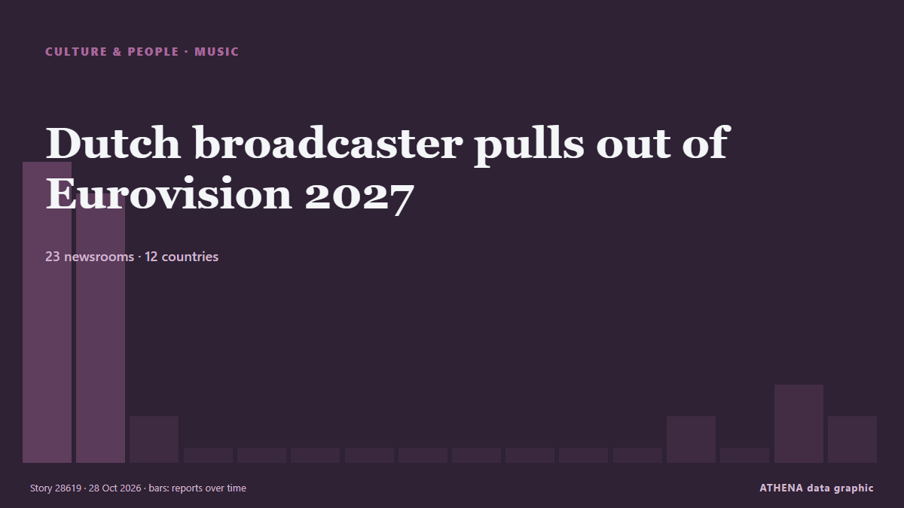

Dutch broadcaster pulls out of Eurovision 2027

The Netherlands will not participate in next year's Eurovision Song Contest, its broadcaster NPO has said, citing "sensitivities" over Israel's participation. von RTÉ News
Unabhängig gemeldet von 23 Medien in 12 Ländern seit dem 27. Okt., zuerst von The New Arab; die Berichterstattung flaut ab. Sport und Kultur werden ohne Risikobewertung abgelegt. Die Konfidenz liegt bei 88 % (hoch): 23 Medien bestätigen es unabhängig, bei einer mittleren Verlässlichkeit der Quellen von 76 %.
Was sich geändert hat: 4 neue Berichte von 3 Redaktionen in den 24 Stunden bis 28. Okt..
Schlagzeilen werden auf Englisch angezeigt, wie veröffentlicht.
Auf einen Blick
Ausgewählt, bewertet und geschrieben nach der veröffentlichten Methodik von ATHENA. Kein Redakteur greift in einzelne Ereignisse ein. So entsteht ATHENA ›
| 27 Oct 09:37 UTC | 9 |
|---|---|
| 27 Oct 11:37 UTC | 8 |
| 27 Oct 13:37 UTC | 1 |
| 27 Oct 15:37 UTC | 0 |
| 27 Oct 17:37 UTC | 0 |
| 27 Oct 19:37 UTC | 0 |
| 27 Oct 21:37 UTC | 0 |
| 27 Oct 23:37 UTC | 0 |
| 28 Oct 01:37 UTC | 0 |
| 28 Oct 03:37 UTC | 0 |
| 28 Oct 05:37 UTC | 0 |
| 28 Oct 07:37 UTC | 0 |
| 28 Oct 09:37 UTC | 1 |
| 28 Oct 11:37 UTC | 0 |
| 28 Oct 13:37 UTC | 2 |
| 28 Oct 15:37 UTC | 1 |
Warum diese Zahlen
Bedeutung
Risiko
Konfidenz
Die Berichterstattung – wer berichtete, und wann
Schlagzeile wie veröffentlicht · öffnet das Original- The New Arab · INTDutch broadcaster pulls out of Eurovision over Israel
- RTÉ News · Irland · IrelandDutch broadcaster pulls out of Eurovision 2027
- NL Times · Niederlande · NetherlandsNetherlands won't participate in 2027 Eurovision Song Contest after all
- Asharq Al-Awsat (English) · Saudi-Arabien · Saudi ArabiaDutch Broadcaster Pulls Out of Eurovision Over Israel ‘Sensitivities’
- Anadolu Agency (English) · Türkei · TurkeyNetherlands withdraws from 2027 Eurovision Song Contest
- Free Malaysia Today · MalaysiaDutch broadcaster pulls out of Eurovision over Israel ‘sensitivities’
- Haaretz (English) · IsraelNetherlands drops out of 2027 Eurovision Song Contest in protest over Israel's participation
- TheJournal.ie · Irland · IrelandThe Netherlands will not participate in Eurovision 2027 after all
- BBC News · Vereinigtes Königreich · United KingdomNetherlands pulls out of Eurovision again over Israel participation
- DutchNews.nl · Niederlande · NetherlandsNetherlands to stay away from Eurovision Song Contest after all
- The Independent · Vereinigtes Königreich · United KingdomAfter pushback, the Dutch reverse course and withdraw from Eurovision again
- Türkiye Today · Türkei · TurkeyNetherlands pulls out of Eurovision 2027 over Israel row
- Al-Monitor · Vereinigte Staaten · United StatesDutch broadcaster pulls out of Eurovision over Israel 'sensitivities'
- Novinite · Bulgarien · BulgariaNetherlands Pulls Out of Eurovision 2027 in Burgas Over Israel Dispute
- Evening Standard (London) · Vereinigtes Königreich · United KingdomEurovision ‘deeply sorry’ as Netherlands pulls out of 2027 contest
- Belfast Telegraph · Vereinigtes Königreich · United KingdomEurovision ‘deeply sorry’ as Netherlands pulls out of 2027 contest
- Al Jazeera English · Katar · QatarThe Netherlands pulls out of Eurovision 2027 due to Israel ‘sensitivities’
- The Scotsman · Vereinigtes Königreich · United KingdomESC 2027: Netherlands pulls out of Eurovision Song Contest over Israel 'sensitivities' in U-turn decision
- Politico Europe · Belgien · BelgiumEurovision confirms candidates for 2027 — but 2 EU countries are still on the fence
- BTA (English) · Bulgarien · Bulgaria36 Broadcasters Named on Current List of Participants in Eurovision Song Contest 2027 in Burgas
- Amnesty International · Vereinigtes Königreich · United KingdomThe Netherlands: Withdrawal from Eurovision must spur the European Broadcasting Union to suspend Israel